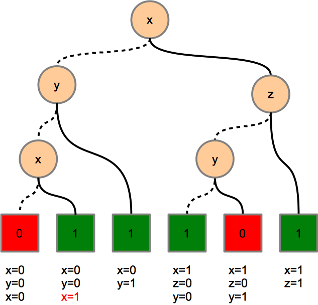

Boolean expressions, propositional formuals, syntax trees, and truth tables are different represenations of Boolean functions.
In general the following properties are not easy to decide when using the first three representations
A complete truth table does answer this questions easily. But it is very expensive to compute and store a complete truth table. A more memory-friendly representation of Boolean functions are binary decision trees or more general binary decision diagrams.
We start with an arbitrary binary decision tree to represent a Boolean function g(x,y,z) with three arguments.
To calculate the value of g(1,1,0) we start at the root node “x on the top”. Because x=1 we follow the solid line to “z“. Because z=0 we follow the dotted line to “y”. Because y=1 we follow the solid line to the result “0”. So this binary decision tree defines g(1,1,0)=0.
We make the following observations